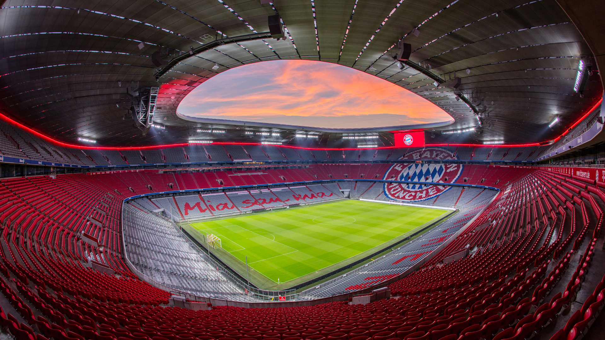

Welcome to the Unofficially-Official FC Bayern München Fan Site!
Stern des Südens
FC Bayern Munich — or, in German, Fußball-Club Bayern München — is a professional football (soccer) club based in Munich. Founded in 1900, the club plays in the German Bundesliga as well as multiple cup competitions including the DFB Pokal, UEFA Champions League, and Club World Cup. Bayern has enjoyed tremendous success in these competitions, winning 6 UEFA Champions Leagues (formely European Cup), 20 DFB Pokals, and a staggering 30 Bundesliga titles. It, therefore, is no wonder that the club has earned the nickname "der Rekordmeister," or "the record champion."
However, there is another moniker attributed to the club that perhaps better captures the identity of FC Bayern: "Stern des Südens" or "Star of the South." This is a reference to the club's proud Bavarian identity, and can be heard sung by thousands of fans on matchdays as part of the club's eponymous anthem.
"Mia san mia"
Continuing with the theme of proud Bavarian heritage, FC Bayern's club motto "Mia san mia" is a saying in the Bavarian dialect of German which literally translates to "we are we." No, this isn't some form of tautoligical trickery, "Mia san mia" more closesly means "we are who we are" and serves to remind players, managers, and fans to uphold the values of the club. More specifically, there are 16 golden golden rules for participants in the club to abide by — all beginning with "Mia san [...]."
50+1
There has been a trend in modern football for the top clubs in the world to be owned by billionaires or despotic regimes seeking to "sportswash" their image. In stark contrast to the likes of Paris Saint-Germain (Qatar), Chelsea (fossil fuel billionaire), and Manchester City (United Arab Emirates), FC Bayern is majority-owned by the fans. Furthermore, this fan ownership is written into the laws governing all German clubs in the famous 50+1 rule which states that 50% of a club's shares (plus one more) must be owned by fans. This means that FC Bayern Munich's proud tradition of fan ownership is here to stay!